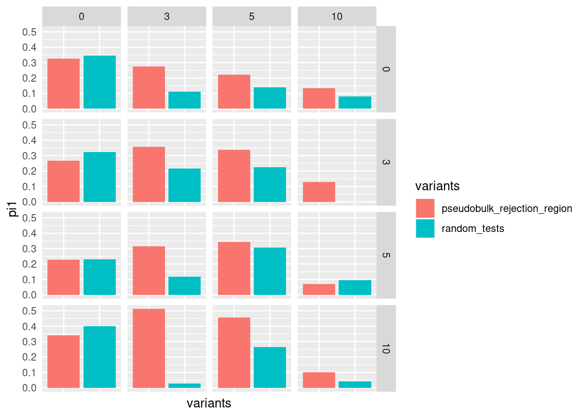

Dynamic eQTL Calling
Last updated: 2021-01-27
Checks: 6 1
Knit directory: sc-dynamic-eqtl/
This reproducible R Markdown analysis was created with workflowr (version 1.6.2). The Checks tab describes the reproducibility checks that were applied when the results were created. The Past versions tab lists the development history.
The R Markdown file has unstaged changes. To know which version of the R Markdown file created these results, you’ll want to first commit it to the Git repo. If you’re still working on the analysis, you can ignore this warning. When you’re finished, you can run wflow_publish to commit the R Markdown file and build the HTML.
Great job! The global environment was empty. Objects defined in the global environment can affect the analysis in your R Markdown file in unknown ways. For reproduciblity it’s best to always run the code in an empty environment.
The command set.seed(20201027) was run prior to running the code in the R Markdown file. Setting a seed ensures that any results that rely on randomness, e.g. subsampling or permutations, are reproducible.
Great job! Recording the operating system, R version, and package versions is critical for reproducibility.
Nice! There were no cached chunks for this analysis, so you can be confident that you successfully produced the results during this run.
Great job! Using relative paths to the files within your workflowr project makes it easier to run your code on other machines.
Great! You are using Git for version control. Tracking code development and connecting the code version to the results is critical for reproducibility.
The results in this page were generated with repository version 226d68b. See the Past versions tab to see a history of the changes made to the R Markdown and HTML files.
Note that you need to be careful to ensure that all relevant files for the analysis have been committed to Git prior to generating the results (you can use wflow_publish or wflow_git_commit). workflowr only checks the R Markdown file, but you know if there are other scripts or data files that it depends on. Below is the status of the Git repository when the results were generated:
Ignored files:
Ignored: .Rhistory
Ignored: analysis/.Rhistory
Ignored: analysis/annotation.nb.html
Ignored: analysis/cell-line-pca.nb.html
Ignored: analysis/deconvolution.nb.html
Ignored: analysis/dynamic-eqtl-2.nb.html
Ignored: analysis/dynamic-eqtl.nb.html
Ignored: analysis/epigenetics-dynamic.nb.html
Ignored: analysis/epigenetics-interaction.nb.html
Ignored: analysis/epigenetics.nb.html
Ignored: analysis/figure/
Ignored: analysis/interaction-qtl-2.nb.html
Ignored: analysis/interaction-qtl.nb.html
Ignored: analysis/static_eqtl.nb.html
Ignored: code/.Rhistory
Ignored: data/ben/
Ignored: data/bulk_counts.full.tsv
Ignored: data/bulk_counts.overlap.tsv
Ignored: data/bulk_cpm.full.tsv
Ignored: data/bulk_cpm.overlap.tsv
Ignored: data/bulk_logtpm.full.tsv
Ignored: data/bulk_logtpm.overlap.tsv
Ignored: data/bulk_rpkm.full.tsv
Ignored: data/bulk_rpkm.overlap.tsv
Ignored: data/bulk_tpm.full.tsv
Ignored: data/bulk_tpm.overlap.tsv
Ignored: data/cibersort/
Ignored: data/dynamic/
Ignored: data/epigenomes/
Ignored: data/gene_locs.filtered.tsv
Ignored: data/genotypes.filtered.tsv
Ignored: data/gv_pairs.filtered.100k.tsv
Ignored: data/gv_pairs.filtered.10k.tsv
Ignored: data/gv_pairs.filtered.25k.tsv
Ignored: data/gv_pairs.filtered.50k.tsv
Ignored: data/gv_pairs.filtered.tsv
Ignored: data/pseudobulk-drop2_cpm.col.full.tsv
Ignored: data/pseudobulk-drop2_cpm.day.full.tsv
Ignored: data/pseudobulk-drop2_logcpm.col.full.tsv
Ignored: data/pseudobulk-drop2_logcpm.day.full.tsv
Ignored: data/pseudobulk_counts.cmbin.full.tsv
Ignored: data/pseudobulk_counts.col.full.tsv
Ignored: data/pseudobulk_counts.col.overlap.tsv
Ignored: data/pseudobulk_counts.day.full.tsv
Ignored: data/pseudobulk_counts.day.overlap.tsv
Ignored: data/pseudobulk_counts.epdcbin.full.tsv
Ignored: data/pseudobulk_counts.type.full.tsv
Ignored: data/pseudobulk_counts.type.overlap.tsv
Ignored: data/pseudobulk_cpm.cmbin.full.tsv
Ignored: data/pseudobulk_cpm.col.full.tsv
Ignored: data/pseudobulk_cpm.col.overlap.tsv
Ignored: data/pseudobulk_cpm.day.full.tsv
Ignored: data/pseudobulk_cpm.day.overlap.tsv
Ignored: data/pseudobulk_cpm.epdcbin.full.tsv
Ignored: data/pseudobulk_cpm.type.full.tsv
Ignored: data/pseudobulk_cpm.type.overlap.tsv
Ignored: data/pseudobulk_logcpm.cmbin.full.tsv
Ignored: data/pseudobulk_logcpm.col.full.tsv
Ignored: data/pseudobulk_logcpm.col.overlap.tsv
Ignored: data/pseudobulk_logcpm.day.full.tsv
Ignored: data/pseudobulk_logcpm.day.overlap.tsv
Ignored: data/pseudobulk_logcpm.epdcbin.full.tsv
Ignored: data/pseudobulk_logcpm.type.full.tsv
Ignored: data/pseudobulk_logcpm.type.overlap.tsv
Ignored: data/seurat.filtered.rds
Ignored: data/seurat.normalized.rds
Ignored: data/seurat.processed.rds
Ignored: data/seurat/
Ignored: data/snp_locs.filtered.tsv
Ignored: data/static/
Ignored: results/
Untracked files:
Untracked: analysis/interaction-qtl-2.Rmd
Untracked: code/cell_line_pca.R
Untracked: code/cibersort.R
Untracked: code/correlation.R
Untracked: code/create_seurat.R
Untracked: code/debug.R
Untracked: code/eqtl_dynamic.R
Untracked: code/eqtl_interaction.R
Untracked: code/eqtl_static.R
Untracked: code/helpers.R
Untracked: code/list_tests.R
Untracked: code/mashr_static.R
Untracked: code/mtc_dynamic.R
Untracked: code/mtc_interaction.R
Untracked: code/mtc_static.R
Untracked: code/normalize_seurat.R
Untracked: code/permutation_dynamic.R
Untracked: code/permutation_mtc_dynamic.R
Untracked: code/prediction_clusters.R
Untracked: code/prediction_lasso.R
Untracked: code/preprocessing.R
Untracked: code/process_seurat.R
Untracked: code/replication.R
Untracked: figs/
Untracked: wrappers/
Unstaged changes:
Modified: .gitignore
Deleted: analysis/cell-deconvolution.Rmd
Modified: analysis/cell-line-pca.Rmd
Deleted: analysis/cibersort-calibration.Rmd
Deleted: analysis/deconvolution-results.Rmd
Modified: analysis/dynamic-eqtl.Rmd
Modified: analysis/epigenetics-dynamic.Rmd
Modified: analysis/static_eqtl.Rmd
Note that any generated files, e.g. HTML, png, CSS, etc., are not included in this status report because it is ok for generated content to have uncommitted changes.
These are the previous versions of the repository in which changes were made to the R Markdown (analysis/dynamic-eqtl.Rmd) and HTML (docs/dynamic-eqtl.html) files. If you’ve configured a remote Git repository (see ?wflow_git_remote), click on the hyperlinks in the table below to view the files as they were in that past version.
| File | Version | Author | Date | Message |
|---|---|---|---|---|
| html | fdc8140 | jmp448 | 2021-01-25 | Build site. |
| html | 72c1041 | jmp448 | 2021-01-20 | Build site. |
| Rmd | c6741b1 | jmp448 | 2021-01-20 | wflow_publish(“analysis/dynamic-eqtl.Rmd”) |
| html | b4aafa8 | jmp448 | 2021-01-12 | Build site. |
| Rmd | 35e2c76 | jmp448 | 2021-01-12 | wflow_publish(“analysis/dynamic-eqtl.Rmd”) |
| html | adf49b2 | jmp448 | 2021-01-12 | Build site. |
| Rmd | 3d90242 | jmp448 | 2021-01-12 | wflow_publish(“analysis/dynamic-eqtl.Rmd”) |
Model Overview
Our dynamic eQTL calling framework is based on the following model: \[{\bf y}_g \sim {\bf K}_{s} +{\bf K}_{cl}+({\bf K}_{cl}*{\bf t}) + {\bf G}_v + ({\bf G}_v*{\bf t})+{\bf t}\] where
\({\bf y}_{g}\) is a \(1*(nt)\) array containing the log-normalized gene expression for gene \(g\) for each (individual, time point) sample
\({\bf K}_s\) is a \(C_s*(nt)\) covariates matrix for \(C\) sample covariates (an intercept plus expression PCs) \({\bf K}_{cl}\) is a \(C_{cl}*(nt)\) covariates matrix of cell-line covariates \({\bf G}_v\) is a \(1*(nt)\) array containing the genotype dosages for each sample
\({\bf t}_v\) is a \(1*(nt)\) array containing the time of collection for each sample
\(({\bf K}*{\bf t})\) and \(({\bf G}*{\bf t})\) capture the interaction of time with cell line PCs and genotype, respectively
This model is applied to each gene-variant pair. A gene-variant pair is considered a significant dynamic eQTL (dynQTL) if it has a Storey’s q-value \(\leq 0.05\) after Bonferroni multiple testing correction.
Bulk Dynamic eQTL Calling
In order to avoid detecting false positives due to differences in the way cell lines proceed through differentiation, we regress out cell line PCs, as well as expression PCs
| Version | Author | Date |
|---|---|---|
| 72c1041 | jmp448 | 2021-01-20 |
| Version | Author | Date |
|---|---|---|
| 72c1041 | jmp448 | 2021-01-20 |
Pseudobulk Dynamic eQTL Calling
In order to avoid detecting false positives due to differences in the way cell lines proceed through differentiation, we regress out cell line PCs, as well as expression PCs
| Version | Author | Date |
|---|---|---|
| 72c1041 | jmp448 | 2021-01-20 |
| Version | Author | Date |
|---|---|---|
| 72c1041 | jmp448 | 2021-01-20 |
Replication rates between bulk and pseudobulk
Cell Line PCs
To see whether these hits are appearing in both datasets, we can look at \(\pi_1\) replication rates. First, we look at replication of bulk hits in pseudobulk, compared to a random set of tests, matched for distance to tss. The number of cell line PCs regressed out of bulk is indicated in the column header, pseudobulk in the row header
| Version | Author | Date |
|---|---|---|
| 72c1041 | jmp448 | 2021-01-20 |
It may be more useful to look at replication of pseudobulk hits in bulk, since we would expect a subset of the bulk hits (those corresponding to increased expression among epicardium-like cells) not to be replicated. Here, again, bulk cell line PCs regressed out are shown in column headers, pseudobulk CLPCs regressed are in row headers. 
| Version | Author | Date |
|---|---|---|
| 72c1041 | jmp448 | 2021-01-20 |
Sample PCs
Now let’s stick to 5 cell line PCs, and see how changing the number of sample PCs will affect this. First, looking at replication of bulk hits in pseudobulk. Columns are sample PCs regressed out of bulk, rows are sample PCs regressed out of pseudobulk. 
| Version | Author | Date |
|---|---|---|
| 72c1041 | jmp448 | 2021-01-20 |
Now, look at replication of pseudobulk hits in bulk. Again, columns are sample PCs regressed out of bulk, rows are sample PCs regressed out of pseudobulk.
| Version | Author | Date |
|---|---|---|
| 72c1041 | jmp448 | 2021-01-20 |
P-value comparison between experiments
Looking across all tests, we see no correlation of p-values
| Version | Author | Date |
|---|---|---|
| 72c1041 | jmp448 | 2021-01-20 |
[1] 0.05603293Finally, we can look specifically at those dynamic eQTLs that were significant at \(q<=0.05\) in both experiments (mouse over a point to see the snp-gene pair)
dynQTL Visualization
Visualize both early and late dynamic eQTLs that were detected in bulk
| Version | Author | Date |
|---|---|---|
| 72c1041 | jmp448 | 2021-01-20 |

| Version | Author | Date |
|---|---|---|
| 72c1041 | jmp448 | 2021-01-20 |

| Version | Author | Date |
|---|---|---|
| 72c1041 | jmp448 | 2021-01-20 |
| Version | Author | Date |
|---|---|---|
| 72c1041 | jmp448 | 2021-01-20 |
Permutation Analysis
To check whether regressing out sample PCs is leading to an increase in false positives, we ran a permutation test
sessionInfo()R version 4.0.0 (2020-04-24)
Platform: x86_64-pc-linux-gnu (64-bit)
Running under: Scientific Linux 7.4 (Nitrogen)
Matrix products: default
BLAS/LAPACK: /software/openblas-0.2.19-el7-x86_64/lib/libopenblas_haswellp-r0.2.19.so
locale:
[1] LC_CTYPE=en_US.UTF-8 LC_NUMERIC=C
[3] LC_TIME=en_US.UTF-8 LC_COLLATE=en_US.UTF-8
[5] LC_MONETARY=en_US.UTF-8 LC_MESSAGES=en_US.UTF-8
[7] LC_PAPER=en_US.UTF-8 LC_NAME=C
[9] LC_ADDRESS=C LC_TELEPHONE=C
[11] LC_MEASUREMENT=en_US.UTF-8 LC_IDENTIFICATION=C
attached base packages:
[1] stats graphics grDevices utils datasets methods base
other attached packages:
[1] ggpubr_0.4.0 patchwork_1.0.1 plotly_4.9.2.1 qvalue_2.21.0
[5] forcats_0.5.0 stringr_1.4.0 dplyr_1.0.2 purrr_0.3.4
[9] readr_1.3.1 tidyr_1.1.2 tibble_3.0.3 ggplot2_3.3.2
[13] tidyverse_1.3.0 workflowr_1.6.2
loaded via a namespace (and not attached):
[1] fs_1.5.0 lubridate_1.7.9 httr_1.4.2 rprojroot_1.3-2
[5] tools_4.0.0 backports_1.1.10 R6_2.4.1 DBI_1.1.0
[9] lazyeval_0.2.2 colorspace_1.4-1 withr_2.3.0 tidyselect_1.1.0
[13] curl_4.3 compiler_4.0.0 git2r_0.27.1 cli_2.0.2
[17] rvest_0.3.6 xml2_1.3.2 labeling_0.3 scales_1.1.1
[21] digest_0.6.25 foreign_0.8-78 rmarkdown_2.4 rio_0.5.16
[25] pkgconfig_2.0.3 htmltools_0.5.0 dbplyr_1.4.4 htmlwidgets_1.5.1
[29] rlang_0.4.7 readxl_1.3.1 rstudioapi_0.11 generics_0.0.2
[33] farver_2.0.3 jsonlite_1.7.1 crosstalk_1.1.0.1 zip_2.1.1
[37] car_3.0-10 magrittr_1.5 Rcpp_1.0.5 munsell_0.5.0
[41] fansi_0.4.1 abind_1.4-5 lifecycle_0.2.0 stringi_1.5.3
[45] whisker_0.4 yaml_2.2.1 carData_3.0-4 plyr_1.8.6
[49] grid_4.0.0 blob_1.2.1 promises_1.1.1 crayon_1.3.4
[53] haven_2.3.1 splines_4.0.0 hms_0.5.3 knitr_1.30
[57] pillar_1.4.6 ggsignif_0.6.0 reshape2_1.4.4 reprex_0.3.0
[61] glue_1.4.2 evaluate_0.14 data.table_1.13.0 modelr_0.1.8
[65] vctrs_0.3.4 httpuv_1.5.4 cellranger_1.1.0 gtable_0.3.0
[69] assertthat_0.2.1 xfun_0.18 openxlsx_4.2.2 broom_0.7.0
[73] rstatix_0.6.0 later_1.1.0.1 viridisLite_0.3.0 ellipsis_0.3.1